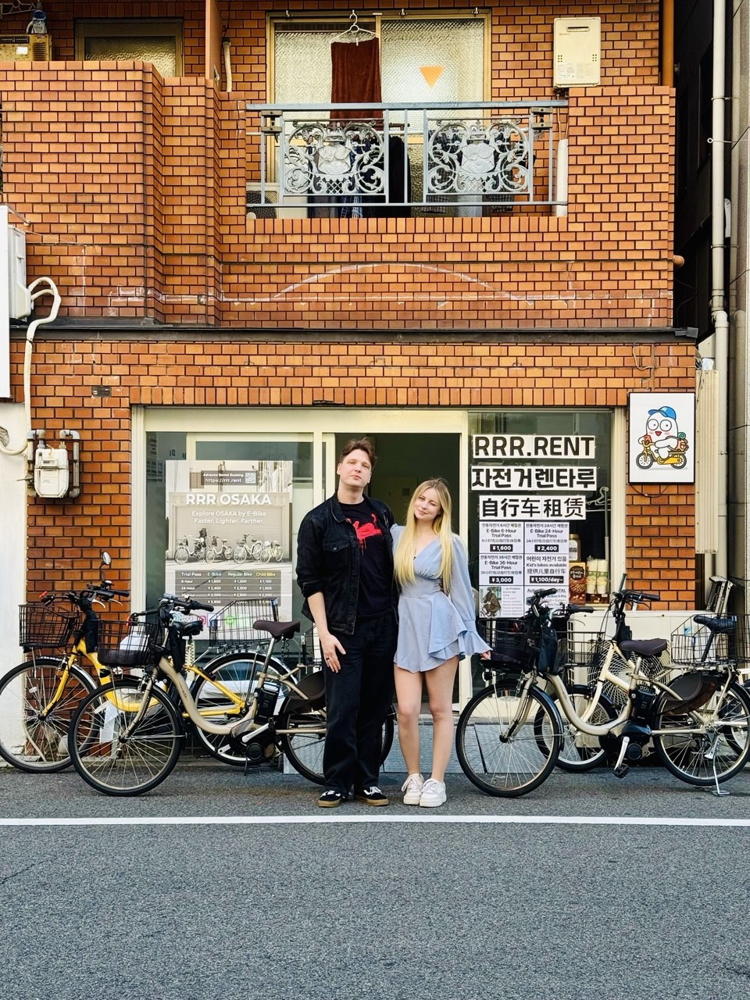
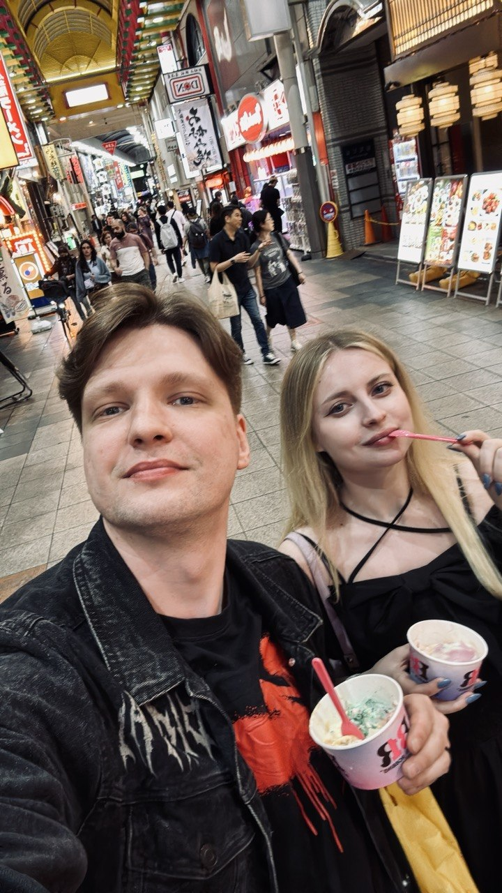
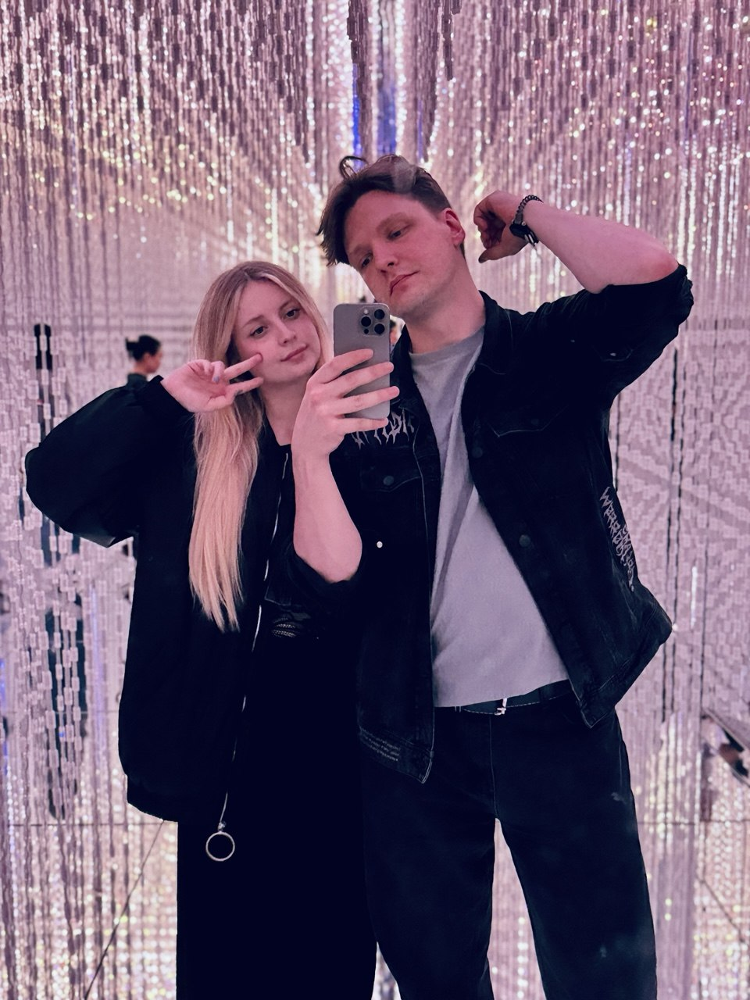

О подарках
Ваше присутствие — самый важный подарок для нас. Если вы захотите порадовать нас чем-то ещё, будем благодарны за вклад в наш семейный бюджет — он поможет осуществить наши общие мечты.

Свадебное приглашение
11 · 09 · 2026
Дорогие родные и близкие
Мы будем счастливы разделить с вами день, с которого начнётся новая глава нашей истории. Приглашаем вас на нашу свадьбу — смеяться, танцевать, обнимать друг друга и создавать воспоминания вместе.
Кирилл и Вера
Немного о нас


Место встречи
Загородная площадка среди зелени, где весь день пройдёт в одном ритме — от церемонии до последнего танца.
Московская область, Солнечногорский район,11 сентября, пятница
Самое важное — приезжайте к началу и возьмите с собой хорошее настроение. Об остальном мы уже позаботились.
Встречаемся, обнимаемся и настраиваемся на прекрасный вечер.
Самый трогательный момент дня, который мы хотим разделить с вами.
Тёплые слова и фотографии на память.
Время вкусной еды, общения и сюрпризов.
Танцевальная часть нашего вечера начинается.
Сладкая традиция и ещё один повод быть рядом.
Зажигаем огни и сохраняем этот момент в памяти.
Переходим в новую локацию и продолжаем праздновать.
Даже самые красивые вечера однажды заканчиваются.
Несколько важных деталей
Ваше присутствие — самый важный подарок для нас. Если вы захотите порадовать нас чем-то ещё, будем благодарны за вклад в наш семейный бюджет — он поможет осуществить наши общие мечты.
Мы будем рады цветам, а если вам захочется выбрать альтернативу — подарите нам бутылочку хорошего вина или шампанского. Однажды мы откроем её, поднимем бокал за вас и с теплом вспомним этот день.
На празднике будут дети — мы заранее пригласили их и учли при подготовке. К сожалению, мы не сможем принять других маленьких гостей, поэтому просим приходить с ребёнком только в том случае, если мы заранее обсудили это с вами.
Dress code
Нам будет приятно, если в своих образах вы поддержите цветовую палитру праздника. Выбирайте тот оттенок и силуэт, в котором вам комфортно — референсы собраны для вдохновения, а не для строгих правил.
На связи
Песня, видео, необычный тост или другой сюрприз — мы только за. Поделитесь идеей с нашим организатором: Олеся вместе с ведущим поможет продумать все детали. К ней же можно обратиться с любыми вопросами о мероприятии.
Олеся · +7 901 723-39-01